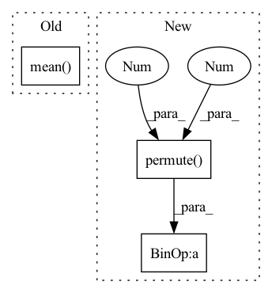

Pattern ID :1946

Before Change
// logit = logit.mean(dim=(1, 2))
posterior = Categorical(logits=logit)
prior = Categorical(logits=torch.zeros_like(logit))
reg = torch.distributions.kl_divergence(posterior, prior).mean()
regs.append(reg)
regs = sum(regs) / len(logits)
// regs = 0.0
return ssimLoss, l1Loss + l2Loss, regs
After Change
for code, logit, freqMap in zip(codes.permute(1, 0, 2, 3), logits, codeFreqMap):
needRegMask = (freqMap > (float(h * w) / k)).float()
sample = torch.distributions.Categorical(logits=torch.zeros_like(logit)).sample()
logit = logit.permute(0, 3, 1, 2)
ceReg = F.cross_entropy(logit, sample, reduction="none") * needRegMask
cePush = F.cross_entropy(logit, code, reduction="none") * (1 - needRegMask)
regs.append(ceReg.mean() + cePush.mean())
// // [m, n, h, w] and m * list(n, h, w, k) logits and [n, k] frequencies
// for code, logit, freq in zip(codes.permute(1, 0, 2, 3), logits, codeFreq):
// // perturb code by the most rare codes with 0.1 probability
In pattern: SUPERPATTERN
Frequency: 3
Non-data size: 3
Instances
Fragment ID: 7278959
Project Name: xiaosu-zhu/mcquic
Commit Name: 3b419aa2f7b4286b6ae991022fe7469650db4bbd
Time: 2021-08-01
Author: xiaosu.zhu@outlook.com
File Name: src/mcqc/losses/quantization.py
M Class Name: CompressionLoss
N Class Name: CompressionLoss
M Method Name: forward(6)
N Method Name: forward(6)
M Parent Class: nn.Module
N Parent Class: nn.Module
M File Name: src/mcqc/losses/quantization.py
N File Name: src/mcqc/losses/quantization.py
M Start Line: 50
M End Line: 57
N Start Line: 49
N End Line: 88
'>
Before Change
logit = logit.permute(0, 3, 1, 2)
ceReg = F.cross_entropy(logit, sample, reduction="none") * needRegMask
cePush = F.cross_entropy(logit, code, reduction="none") * (1 - needRegMask)
regs.append(ceReg.mean() + cePush.mean())
// // [m, n, h, w] and m * list(n, h, w, k) logits and [n, k] frequencies
// for code, logit, freq in zip(codes.permute(1, 0, 2, 3), logits, codeFreq):
// // perturb code by the most rare codes with 0.1 probability
After Change
// frequency to prob
prob = reverseBin / (maxFreq + (float(h * w) / k))
// [n, h, w]
sample = torch.distributions.Categorical(probs=prob).sample((h, w)).permute(2, 0, 1)
logit = logit.permute(0, 3, 1, 2)
// [n, 1, 1]
weight = freqMap / maxFreq[:, None]
ceReg = F.cross_entropy(logit, sample, reduction="none") * needRegMask * weight
cePush = F.cross_entropy(logit, code, reduction="none") * (1 - needRegMask) * weight
regs.append((ceReg + cePush).mean())
// // [m, n, h, w] and m * list(n, h, w, k) logits and [n, k] frequencies
'>
Fragment ID: 7278954
Project Name: xiaosu-zhu/mcquic
Commit Name: 49b82a18ca2e79c4b121a944f32f90e85422db22
Time: 2021-08-08
Author: xiaosu.zhu@outlook.com
File Name: src/mcqc/losses/quantization.py
M Class Name: CompressionLoss
N Class Name: CompressionLoss
M Method Name: forward(7)
N Method Name: forward(6)
M Parent Class: nn.Module
N Parent Class: nn.Module
M File Name: src/mcqc/losses/quantization.py
N File Name: src/mcqc/losses/quantization.py
M Start Line: 55
M End Line: 60
N Start Line: 43
N End Line: 71
'>
Before Change
embed_normalized = self.embedding.embed_avg / cluster_size.unsqueeze(0)
self.embedding.weight.data.copy_(embed_normalized)
loss = self.beta * (z_q.detach() - z).pow(2).mean()
z_q = z + (z_q - z).detach()
z_q = z_q.permute(0, 3, 1, 2).contiguous()
return z_q, loss, (perplexity, encodings, encoding_indices)
After Change
z_flattened = z.view(-1, self.codebook_dim)
// distances from z to embeddings e_j (z - e)^2 = z^2 + e^2 - 2 e * z
d = torch.sum(z_flattened.pow(2), dim=1, keepdim=True) + \
torch.sum(self.embedding.weight.pow(2), dim=1) - 2 * \
torch.einsum("bd,dn->bn", z_flattened, self.embedding.weight.permute(1,0)) // "n d -> d n"
encoding_indices = torch.argmin(d, dim=1)
z_q = self.embedding(encoding_indices).view(z.shape)
'>
Fragment ID: 7278937
Project Name: tgisaturday/dalle-lightning
Commit Name: f5fd383f3ac54b79f33c1ab36ae01f46ea06c6c7
Time: 2021-08-04
Author: jamesk1228@gmail.com
File Name: pl_dalle/modules/vqvae/quantize.py
M Class Name: EMAVectorQuantizer
N Class Name: EMAVectorQuantizer
M Method Name: forward(2)
N Method Name: forward(2)
M Parent Class: nn.Module
N Parent Class: nn.Module
M File Name: pl_dalle/modules/vqvae/quantize.py
N File Name: pl_dalle/modules/vqvae/quantize.py
M Start Line: 68
M End Line: 99
N Start Line: 131
N End Line: 164